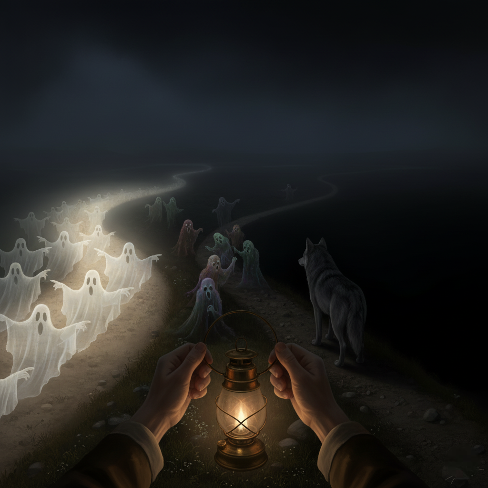

Night has fallen. You walk alone, carrying a flickering lantern through a forest path veiled in shadows.
Along the way, pale ghosts drift between the trees, each pointing toward a different road. Their whispers are ancient, soft, and persistent.
Some speak with the voice of tradition, others with the call of rebellion. Some offer comfort. Some, only questions.
You must decide: